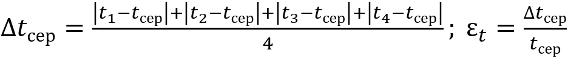
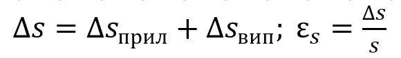
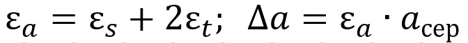

Мета: визначити прискорення руху кульки, яка скочується похилою поверхнею.
Обладнання: похила поверхня, кулька, секундомір, вимірювальна стрічка
Підготуйте похилу поверхню. Це може бути стіл, під дві ніжки якого підкладіть невеликі предмети.
Підготуйте кульку невеликих розмірів. Це може бути кулька для настільного тенісу, металева кулька від підшипника. Можна також використати предмет циліндричної форми, якщо ви не знайдете кульки.
Пустіть по поверхні стола кульку, переконайтеся, що кулька котиться по прямій траєкторій.
Підберіть кут нахилу таким, щоб кулька котилася не менш ніж 1 секунду. Штовхати кульку не потрібно.
Якщо кулька котиться не по прямій, можна покласти довгу планку, опираючись збоку на яку котитиметься ваша кулька.
Відмітьте точку, від якої ви пускатимете кульку.
Відмітьте точку, до якої котитиметься кулька.
Підготуйте секундомір. Це може бути секундомір у вашому мобільному телефоні.
Сфотографуйте вашу установку та надішліть фото через nz.ua у Дистанційному завданні до цього уроку.
Суворо дотримуйтесь інструкції з безпеки. Результати вимірювань відразу заносьте до таблиці.
1. Виміряйте відстань s від позначки від якої ви відпускатимете кульку до позначки, до якої котитиметься кулька (ця відстань дорівнює модулю переміщення кульки).
2. Розташуйте кульку навпроти позначки та виміряйте час t1, за який скочується кулька (до моменту її перетину позначки завершення руху).
| № | Переміщення кульки s, м | Час руху кульки | Прискорення кульки aсер, м/с2 |
Похибка вимірювання прискорення | Результат вимірювання прискорення a = aсер ± ∆a, м/с2 |
||
| ti, с | tсер, с | відносна εa, % |
абсолютна ∆a, м/с2 |
||||
| 1 | |||||||
| 2 | |||||||
| 3 | |||||||
| 4 | |||||||
1. Обчисліть середній час руху кульки: tсер = (t1 + t2 + t3 + t4 ) / 4
tсер =
2. Обчисліть середнє значення прискорення кульки: aсер = 2s/tсер2
aсер =
3. Обчисліть абсолютну та відносну похибки вимірювання (див. п. 4 § 2):
1) часу: 
∆tсер =
εt =
2) модуля переміщення: 
(Похибки приладів див. п. 4 § 2, якщо ви користуєтесь іншими приладами, то вважайте, що похибка приладу дорівнює половині ціни поділки шкали цього приладу.
Якщо вимірювання проводилися один раз, то випадкова похибка дорівнює половині ціни поділки шкали приладу)
∆sсер =
εs =
3) модуля прискорення: 
εa =
∆a =
4. Округліть результати та запишіть до таблиці результат вимірювання прискорення.